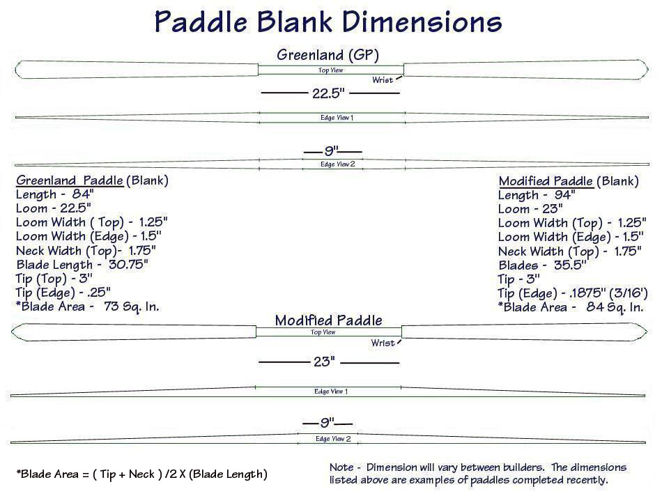

| Greenland Paddle Construction | Menu Last Page Next Page |
|
 The paddle dimensions above represent the cut-out size after using a bandsaw. All lines will be drawn out on the 2 X 4 lumber before cutting. All dimensions are drawn with straight lines along the top and edge of the 2 X 4. The area at the wrist will be rounded slightly when drawn. Wrist and tip drawings are illustrated on the next page. The bandsaw removes as much wood as possible, making final paddle shaping an easy process. The "Edge View 2" profile drawings for both paddles above show a length of 9 inches at the loom. This simply means that the blades taper until 9 inches remain at the center of the loom (shaft). This is to allow for an 8 inch take-apart ferrule to be added later. The loom itself is still 22.5 or 23 inches depending on the paddle. The "Edge View 1" configuration makes the paddle a bit stronger overall due to increased loom and blade thickness. The paddle dimensions used will vary between individuals. The paddles illustrated above vary by 10 inches in length, and though I use both paddles, and everything in between, I prefer the longer sizes and the modified AP layout. |
|